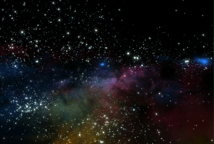

通过使用星形和空间笔刷预设，可以快速绘制星域并设置在其中飞翔的动画。

设置星域的动画
- 将场景颜色更改为黑色（选择，然后在“3D 视图”(3D Views)下单击“背景”(Background)色样。）。
- 切换到场景绘制视图（打开“Paint Effects”面板，然后选择“绘制 > 绘制场景”(Paint > Paint Scene)）。
- 选择“笔刷 > 工具设置”(Brush > Tool Settings)，然后启用“在深度模式下绘制”(Paint At Depth)。
- 在“内容浏览器”(Content Browser)（“笔刷 > 获取笔刷”(Brush > Get Brush)）中或工具架上，单击绘制时要使用的笔刷预设。建议使用 galactic 文件夹中的笔刷 galaxy.mel。
- 在场景上拖动以绘制星形。
“Paint Effects”会在视图平面上绘制笔划，其在深度模式下绘制是在场景中单击来开始笔划时确定的。如果在靠近透视视图的栅格平面的前面处开始笔划，那么星形将离得非常近。如果在靠近透视视图的栅格平面的后面处开始笔划，那么星形将离得非常远。
- 重复步骤 4 和步骤 5，直到星域具有所需的外观。确保以不同的深度开始笔刷笔划，以产生“飞过”的星形。此外，请不时更改笔刷以添加星系或空间辉光。
- 移动到第一帧，然后单击“自动关键帧切换”(Auto keyframe toggle)（Maya 主窗口右下角处的钥匙图标）。
- 切换到场景视图（“面板 > 透视 > 透视”(Panels > Perspective > persp)），然后选择摄影机（“视图 > 选择摄影机”(View > Select Camera)）。
- 在通道盒中，选择“平移”(Translate)框，单击鼠标右键，然后选择“为选定项设定关键帧”(Key Selected)。
- 移动到动画中的最后一帧，然后推拉到场景中。
- 在场景视图中，单击“向前播放”(Play Forward)按钮以检查效果是否为想要的效果。
- 渲染动画。请参见使用“Paint Effects”笔划渲染场景。“辉光”(Glow)笔刷不需要灯光进行渲染。